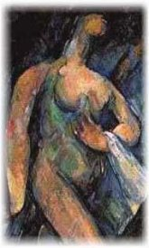

Nuala Ní Chonchúir
Poem Beginning With A Line By Plath
This is the light of the mind, cold and planetary,
it keeps me solitary, stumbling inside paranoia.
My anchoritic needs are not a bow to religion,
they are as prosaic as any modern-day hermit’s:
who is there to trust with the black of my heart, when
some trample, some steal what’s mine for their own?
A Cézanne Nude
I stand as still
as a fruit on a plate,
my breasts are plums,
my behind a peach.
Monsieur says if I move,
he will pulp me,
so I hand him
my daguerreotype
and leave the door open
on my way out.
Born Dublin 1970, Nuala Ní Chonchúir lives in Galway, Ireland. Her bilingual poetry collection Tatto:Tatú (Arlen House, 2007) was shortlisted for the 2008 Strong Award. Her two short fiction collections were also published by Arlen House. She is fiction editor for Southword in 2008; she will represent Ireland at the Tokyo International Poetry Festival in November. Her website is http://www.nualanichonchuir.com.
|